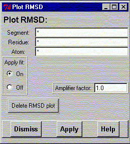

**************************************************************************
Calculate and plot the RMSD widget
Leif Laaksonen CSC 1997
**************************************************************************
If a molecular dynamics trajector is defined it is possible to plot the Root Mean Square Deviation (RMSD) of a selected set of atoms as ellipsoids. The plot is always in the global x, y, z coordinate system.
Select the atoms and press the apply button. There are two different approaches to generate the ellipsoids:
The plot can be deleted by pressing the Delete button. If the fluctuation has a small amplitude it is possible to magnify the amplitude by a factor.

Line command: p_rmsd Segment Residue Atom(s) Scale fit/nofit
**************************************************************************
LUL/1997
**************************************************************************